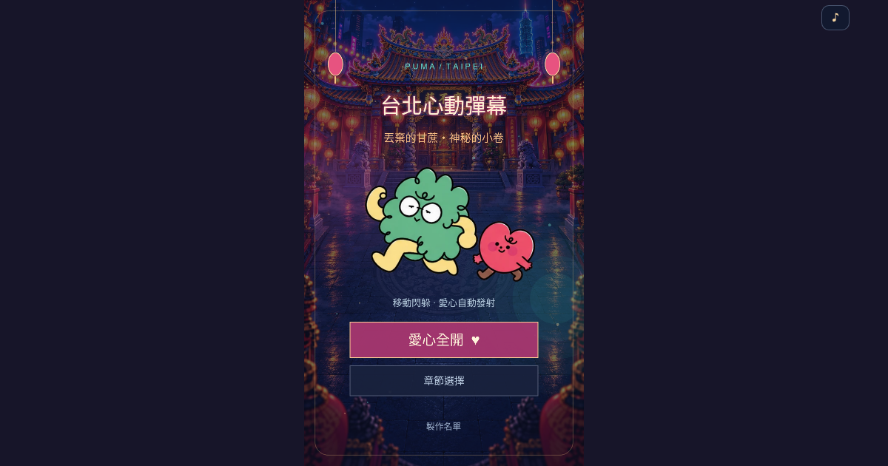

台北心動彈幕
台北心動彈幕是一款免費線上彈幕射擊遊戲，使用瀏覽器即可遊玩，支援手機觸控與電腦操作。玩家操控綠色小英雄，收集武器升級、閃避密集彈幕並挑戰魔王。
兩個關卡
第一關「丟棄的甘蔗」以廟宇場景展開戰鬥。第二關「神秘的小卷」走進台灣校園，迎戰巨大藍莓、小卷切片與蟑螂；魔王戰依序進入巨型小卷、鮮奶瓶與病毒彈幕三個階段，配樂從輕鬆校園曲轉入金屬樂與「有鮮奶」合唱。
操作與玩法
手機玩家使用畫面上的虛擬搖桿移動，電腦玩家使用方向鍵移動。角色會自動攻擊；拾取道具提升武器，逐步獲得追蹤與大型飛彈等攻擊。正式版提供七格血量，第一關通關後恢復血量並進入第二關。電腦玩家可按 Escape 暫停遊戲。
遊戲採分關載入素材，第二關的圖像與音訊在進場時載入。
